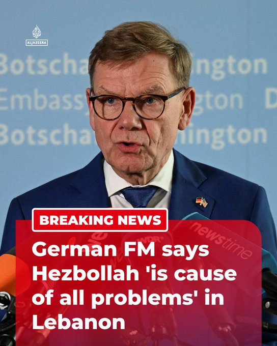

@AJENews
📝 原文: BREAKING: German Foreign Minister Johann Wadephul has said Hezbollah is the cause of all problems in Lebanon, according to Reuters.More onhttp://Aljazeera.com
🇨🇳 译文: 突发新闻：据路透社报道，德国外交部长约翰·瓦德菲尔表示真主党是黎巴嫩所有问题的根源。更多信息请访问 http://Aljazeera.com


🕒 2026-07-07T10:24:39+00:00